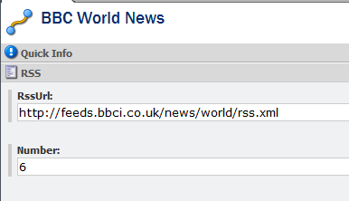
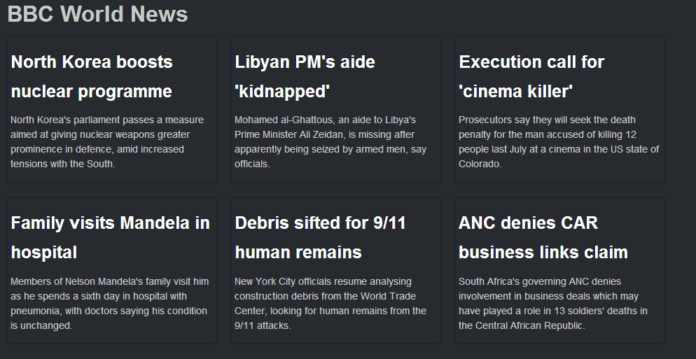

With Glass you can turn on Castle Windsor construction so that your models are instantiated by the Castle Windsor container. You might ask why you would want to do this, well it allows you to combine services with data mapped from Sitecore in one call.
To demo this I am going to create a landing page that lists out RSS feed items. I want the URL to the RSS feed to specified in Sitecore along with the number of articles I want to display. My model will look like this:
Notice that the constructor on my model takes an RSS Service, I need to get Castle Windsor to load this service and also tell Glass.Mapper to use the Windsor Construction. We need to update the GlassMapperSc class in the App_Start folder, first we create an instance of the Config class and set the UseWindsorConstructor property to true:
var config = new Config();
config.UseWindsorContructor = true;
Now we need to load our new services in to the Windsor Container:
//create the resolver
var resolver = DependencyResolver.CreateStandardResolver(config);
//install the custom services
var container = (resolver as DependencyResolver).Container;
container.Install(new ServiceInstaller());
I have created a ServiceInstaller to ensure I keep my code organised:
I now have my container setup and Glass.Mapper ready to use, lets look at the sublayout code:
My sublayout still remains really simple.
Finally in Sitecore I just need to set the RSS URL and number or articles to display:
Once we publish everything and load the page we can see the RSS feed items rendered:
In this tutorial we have seen how you can enable the Castle Windsor construction to allow you to create a class that contains both Sitecore data and service in a single call.